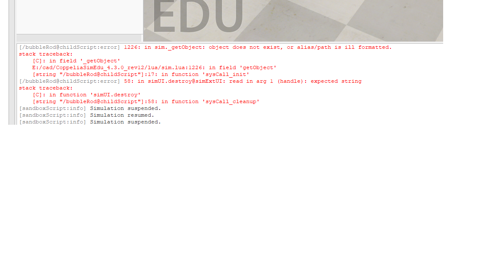
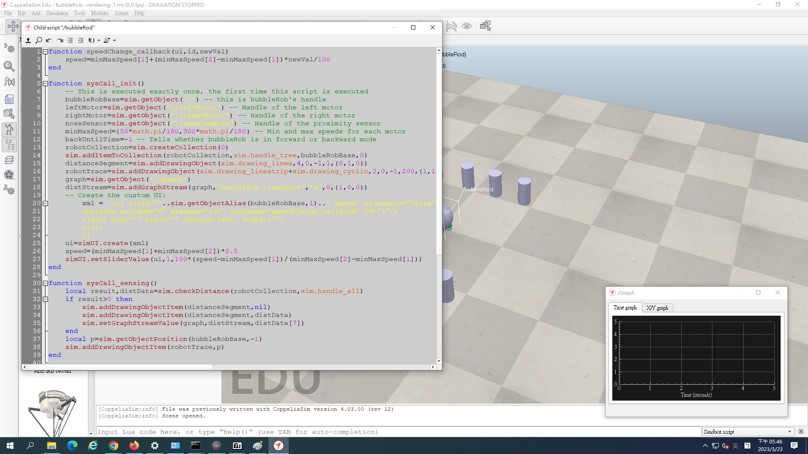

tutorial <<
Previous 分組報告
Bubblerob 製作心得:
41023253 謝宗銘:
在這一次的作業實作裡學習到了如何在coppeliasim裡製作可動的機器人，雖然一開始只是照著尺寸在設定基準值，但在後面裝置傳感器及其設定值數的過程裡，也漸漸的在熟悉內部的操作，無論是Dymamic的設定或是研究如何使Graph所跑出的曲線是否正常，每次的失敗都會一點點的學習，其中遇到最大的麻煩是我們在最後的模擬階段時，遇到了程式編碼出現了錯誤以及無法正常執行的狀況，幸好有即時的發問立即解決才得以順利進行後續的階段。
下圖為當初遇到的問題

提問後發現是編碼 ui 介面中的 on-change 誤打為 onchange

41023243 廖郁葳:
經過這次課程的學習過程，學習到利用程式製作可動機器人，利用著老師給予我們的數值、尺寸及初始設定，漸漸了解程式的玩法，解題的經過，從中學習不一樣的觀念，才能使我們改變下一次製做的概念。製作機器人過程中，遇到無法行駛、感應器失常，我們從問題中尋找出正確解答，這使我們完成後感到鬆一口氣。後面的模擬試驗階段中，碰到了程式編碼上的技術問題，錯誤及不正常運行，幸好有高人指點及老師的幫忙下，迅速的解決問題，才能很快地順利進行更後續的階段。
tutorial <<
Previous